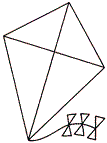

Kite
Try this Drag the orange dots on each
vertex
to reshape the kite. Notice how AB and AD are always congruent (equal in length) as are BC and DC.

A kite is a member of the quadrilateral family,
and while easy to understand visually, is a little tricky to define in precise mathematical terms.
It has two pairs of equal sides. Each pair must be
adjacent sides (sharing a common vertex)
and each pair must be distinct. That is, the pairs cannot have a side in common.
Drag all the orange dots in the kite above, to develop an intuitive understanding
of a kite without needing the precise 'legal' definition.
Properties of a kite
- Diagonals intersect at
right angles.
In the figure above, click 'show diagonals' and reshape the kite. As you reshape the kite, notice the diagonals always intersect each other at 90°
(For concave kites, a diagonal may need to be extended to the point of intersection.)
- Angles between unequal sides are equal
In the figure above notice that
∠ABC = ∠ADC no matter how how you reshape the kite.
- Area
The area of a kite can be calculated in various ways. See Area of a Kite
- Perimeter
The distance around the kite. The sum of its sides. See Perimeter of a Kite
- A kite can become a rhombus
In the special case where all 4 sides are the same length, the kite satisfies the definition of a
rhombus.
A rhombus in turn can become a
square
if its interior angles are 90°. Adjust the kite above and try to create a square.
Concave kites
If either of the end (unequal) angles is greater than 180°, the kite becomes concave.
Although it no longer looks like a kite, it still satisfies all the properties of a kite.
This shape is sometimes called a dart.
To see this, in the figure above drag point A to the right until is passes B.
Other polygon topics
General
Types of polygon
Area of various polygon types
Perimeter of various polygon types
Angles associated with polygons
Named polygons
(C) 2011 Copyright Math Open Reference.
All rights reserved